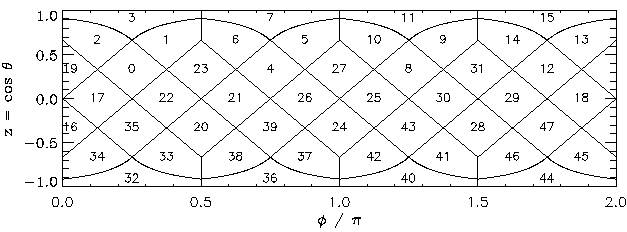
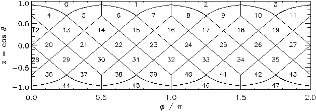

API¶
This is the API for the cdshealpix Python package.
This package is a wrapper around the Rust cdshealpix crate. The functions currently implemented by cdshealpix are the following:
cdshealpix¶
The HEALPix cells can be represented following two schema. The nested and the ring one.
Here are two methods in the cdshealpix base module allowing to
convert HEALPix cells represented in the nested scheme into cells
represented in the ring scheme and vice versa.
|
Convert HEALPix cells from the NESTED to the RING scheme. |
|
Convert HEALPix cells from the RING to the NESTED scheme. |
cdshealpix.nested¶

The HEALPix cells at \(depth=1\) represented in the nested scheme¶
|
Get the HEALPix indexes that contains specific sky coordinates. |
|
Get the HEALPix indexes that contains specific sky coordinates. |
|
Get the longitudes and latitudes of the center of some HEALPix cells. |
|
Get the coordinates of the center of a healpix cell. |
|
Project the center of a HEALPix cell to the xy-HEALPix plane. |
|
Project sky coordinates to the HEALPix space. |
|
Project coordinates from the HEALPix space to the sky coordinate space. |
|
Get the longitudes and latitudes of the vertices of some HEALPix cells at a given depth. |
|
Get the sky coordinates of the vertices of some HEALPix cells at a given depth. |
|
Get the neighbouring cells of some HEALPix cells at a given depth. |
|
Get the neighbours of specific healpix cells. |
|
Get the HEALPix cells contained in a cone at a given depth. |
|
Get the HEALPix cells contained in a polygon at a given depth. |
|
Get the HEALPix cells contained in an elliptical cone at a given depth. |
|
Compute the HEALPix bilinear interpolation from sky coordinates. |
cdshealpix.ring¶
The ring scheme HEALPix methods take a nside parameter instead
of a depth one.
nside refers to the number of cells being contained in the side
of a base cell (i.e. the 12 cells at the depth 0).
While in the nested scheme, nside is a power of two
(because \(N_{side} = 2 ^ {depth}\)), in the ring scheme,
nside does not necessary have to be a power of two!

The HEALPix cells at \(N_{side}=2\) represented in the ring scheme¶
|
Get the HEALPix indexes that contains specific sky coordinates. |
|
Get the HEALPix indexes that contains specific sky coordinates. |
|
Get the longitudes and latitudes of the center of some HEALPix cells at a given depth. |
|
Get the sky coordinates of the center of some HEALPix cells at a given nside. |
|
Project the center of a HEALPix cell to the xy-HEALPix plane. |
|
Get the longitudes and latitudes of the vertices of some HEALPix cells at a given nside. |
|
Get the sky coordinates of the vertices of some HEALPix cells at a given nside. |
cdshealpix.skymap¶
This module provides a minimal interface to interact with Skymaps, as defined in the data format for gamma ray astronomy specification.
- class cdshealpix.skymap.SkymapExplicit(keys, values, order)¶
An explicit Skymap, containing values to associate to healpix cells.
valuesis a 2D numpy array.- __init__(keys, values, order)¶
Instantiate an explicit skymap.
- Parameters:
- keys
np.array Is a one-dimensional array-like. Contains the HEALPix number.
- values
np.array Is a one dimensional array-like.
- keys
Examples
>>> from cdshealpix.skymap import SkymapExplicit >>> import numpy as np >>> map = SkymapExplicit(np.array([0, 1, 2]), np.array([2, 3, 4]), 0) >>> map.order 0
- classmethod from_fits(path: str | Path)¶
Read an explicit skymap in the nested schema from a FITS file.
This reader supports files which are:
in the nested scheme
and the explicit format
- Parameters:
- pathstr,
pathlib.Path The file’s path.
- pathstr,
- Returns:
SkymapExplicitAn explicit skymap. Its values are in a 2D numpy array which data type in inferred from the FITS header.
- to_fits(path)¶
Write an explicit Skymap in a fits file.
- Parameters:
- path
str,pathlib.Path The file’s path.
- path
- to_implicit(null_value=None)¶
Convert this
SkymapExplicitinto aSkymapImplicit.- Parameters:
- null_value: `int` or `float`
Is the value to be used as a null to fill the implicit skymap where the explicit one has gaps. Its type should be compatible with the type of values. It defaults to 0.
Examples
>>> from cdshealpix.skymap import SkymapExplicit >>> import numpy as np >>> map = SkymapExplicit(np.array([0, 1, 2]), np.array([2.1, 3.2, 4.4]), 0) >>> map.to_implicit(null_value=np.nan).values array([2.1, 3.2, 4.4, nan, nan, nan, nan, nan, nan, nan, nan, nan])
- class cdshealpix.skymap.SkymapImplicit(values, null_value=None)¶
An implicit Skymap, containing values to associate to healpix cells.
- __init__(values, null_value=None)¶
Instantiate an implicit skymap.
- Parameters:
- values
np.array Is a one dimensional array-like. It should have
- null_value
number, optional Is the value to use in case of missing data. It defaults to 0.
- values
Examples
>>> from cdshealpix.skymap import SkymapImplicit >>> import numpy as np >>> map = SkymapImplicit(np.array([1.1] * 11 + [np.nan])) >>> map.order 0
- classmethod from_fits(path: str | Path)¶
Read a skymap in the nested schema from a FITS file.
This reader supports files which are:
all sky maps
in the nested scheme
and the implicit format
- Parameters:
- pathstr,
pathlib.Path The file’s path.
- pathstr,
- Returns:
SkymapImplicitA skymap. Its values are in a numpy array which data type in inferred from the FITS header.
- to_fits(path)¶
Write an implicit Skymap in a fits file.
- Parameters:
- path
str,pathlib.Path The file’s path.
- path
- to_explicit()¶
Convert this implicit skymap into an explicit one.
- Returns:
Examples
>>> from cdshealpix.skymap import SkymapImplicit >>> implicit_map = SkymapImplicit([-1]*8 + [1, 2, 3, 4], null_value=-1) >>> explicit_map = implicit_map.to_explicit() >>> print(explicit_map.keys, explicit_map.values) [ 8 9 10 11] [1 2 3 4]
- quick_plot(*, size=256, convert_to_gal=True, path=None)¶
Preview a skymap in the Mollweide projection.
- Parameters:
- size
int, optional The size of the plot in the y-axis in pixels. It fixes the resolution of the image. By default 256
- convert_to_gal
bool, optional Should the image be converted into a galactic frame? by default True
- path
strorpathlib.Path, optional If different from none, the image will not only be displayed, but also saved at the given location. By default None
- size